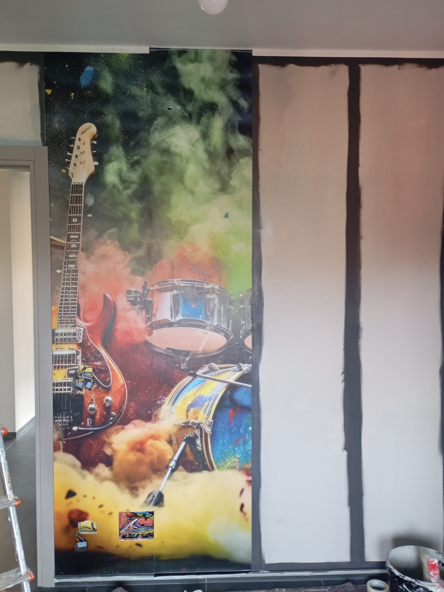
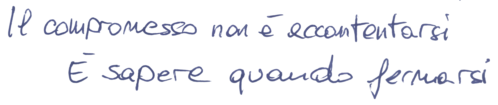
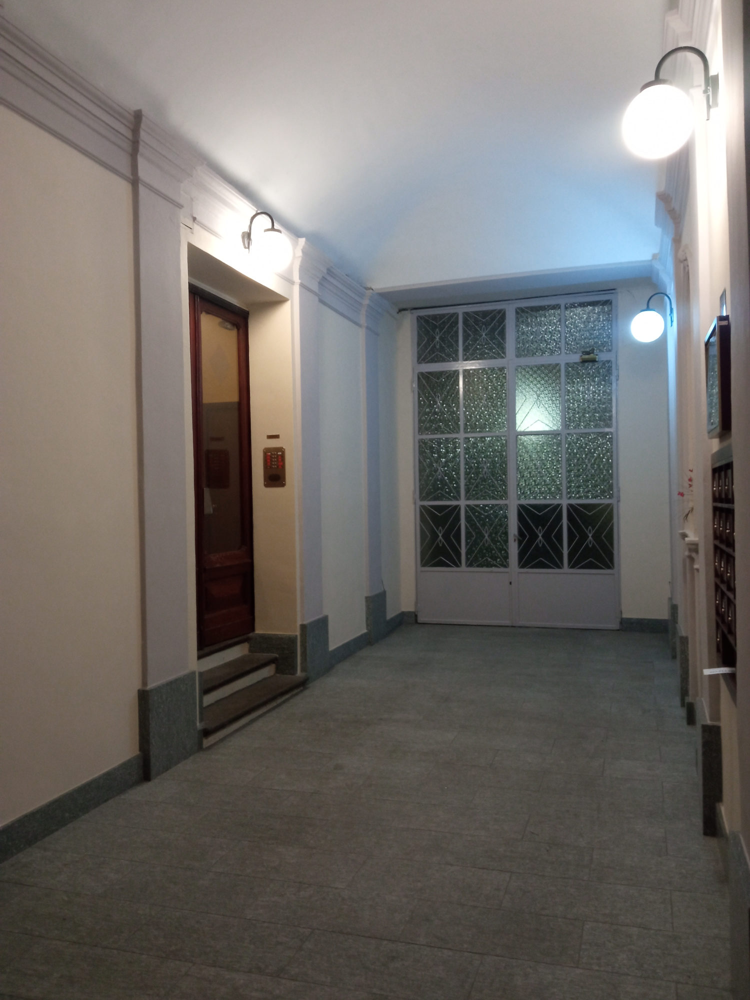
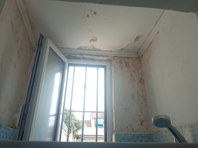
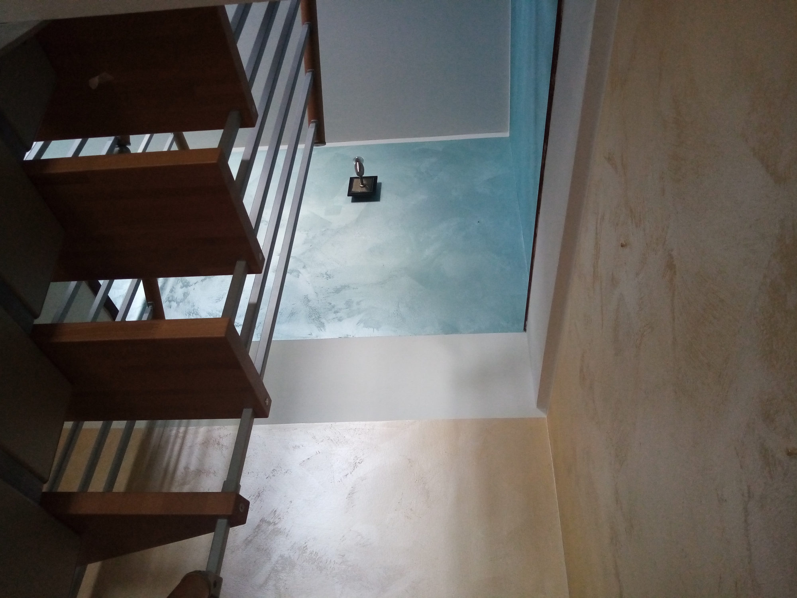
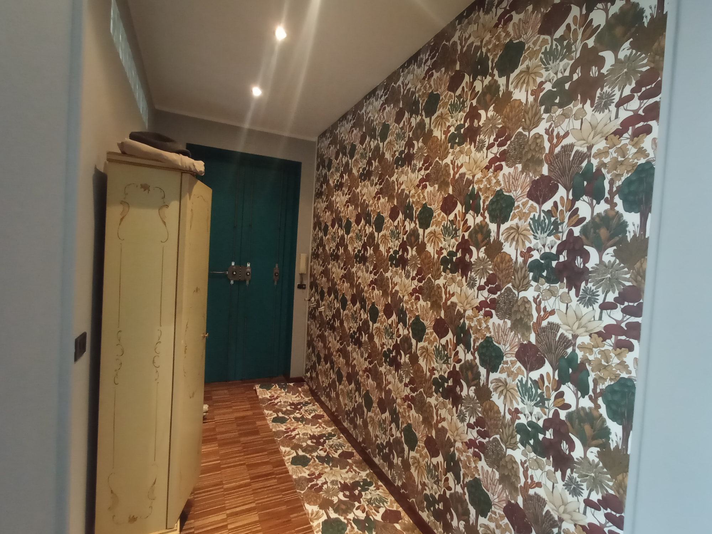
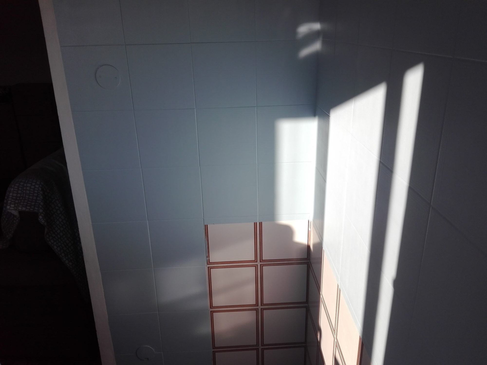
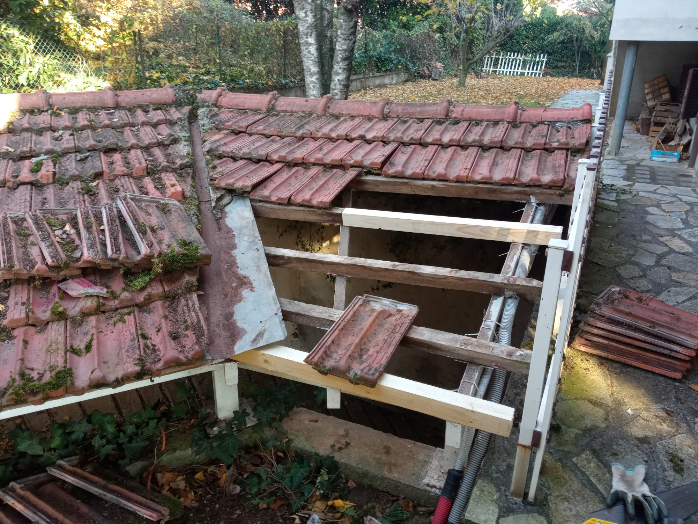

I MIEI SERVIZI
La trasformazione sarà sotto i tuoi occhi

I miei servizi sono quelli del classico decoratore, o a volte, meno propriamente, chiamato imbianchino o pittore.
Sono però specializzato nel ripristino estetico di legno, ferro, muri e piastrelle, per dare una seconda possibilità a ciò che esteticamente non ha più nulla da dare, ma che a livello pratico può ancora difendersi bene.
Hai una superficie da recuperare, rinnovare, sistemare o tinteggiare? Chiamami e valutiamo insieme la soluzione più adatta.

Preventivi e sopralluogo
Ogni lavoro ha le sue caratteristiche: superficie, condizioni delle pareti, tipologia dell’immobile, accessibilità e logistica possono incidere sul costo finale.
Per questo il preventivo viene sempre elaborato sulla base delle reali condizioni del lavoro.
Il sopralluogo è gratuito e permette di valutare direttamente gli ambienti, le superfici e le eventuali esigenze specifiche, così da formulare un preventivo preciso e personalizzato.
DECORAZIONI & TINTEGGIATURE
Tinteggiature e decorazioni per ambienti interni, come appartamenti, negozi, locali di sgombero ecc...; per esterni, dai muri di cinta, porzioni di facciata, serrande, staccionate ecc...

RIPRISTINI
Ripristini estetici di superfici e manufatti deteriorati, rovinati o danneggiati, attraverso interventi mirati come raschiature, rasature localizzate, cicli di fondo e prodotti specifici e l'applicazione di finiture appropriate.
Dalle pareti danneggiate da perdite, infiltrazioni o muffa, agli elementi in legno deteriorati e agli elementi in ferro arrugginiti, intervengo per recuperare e valorizzare ciò che può ancora essere riportato a nuova vita.
Sono specializzato nel recupero di muri danneggiati da perdite, infiltrazioni d'acqua o fumo.

DECORATIVI
Realizzo diverse tecniche decorative, tra cui spatolati e spazzolati, adattando la finitura all'ambiente e al risultato desiderato.

CARTE DA PARATI
Posa e rimozione di carta da parati. Per la posa, c'è la possibilità di applicarla anche su superfici particolari, come ad esempio porte. È possibile applicare appositi cicli protettivi per garantirne una maggiore resistenza e durata nel tempo, un modo originale per rinnovare e valorizzare elementi come porte, ante, ecc.

SMALTI E RESINE
Utilizzo di smalti e resine specifiche per il ripristino e il rinnovamento di diverse superfici, con particolare attenzione a piastrelle e pavimentazioni. Una soluzione pratica per rinnovare superfici usurate, rovinate o semplicemente non più attuali, evitando quando possibile interventi di sostituzione.
Per piastrelle e pavimentazioni di cucine, bagni e altri ambienti, sono disponibili cicli specifici con conformità al protocollo HACCP e finiture antiscivolo certificate R10 secondo DIN 51130, per garantire maggiore sicurezza e resistenza all'uso.

PICCOLI INTERVENTI E MANUTENZIONI
Piccoli interventi di manutenzione e ripristino, dalla sistemazione di tettoie e serramenti a interventi localizzati su murature, avvolgibili e altri elementi dell'abitazione.
